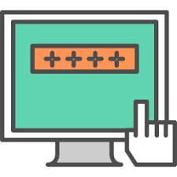
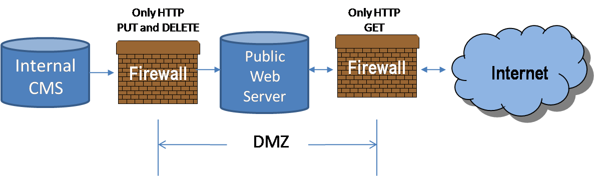

Virustorjuntaohjelmiston tehtävä on suojata tietokonetta haittaohjelmilta, kuten viruksilta, troijalaisilta ja kiristysohjelmilta.
Palomuuri valvoo kaikkea tietokoneen tai verkon sisään‑ ja ulosmenevää liikennettä. Sen tehtävä on estää luvattomat yhteydet ja suojata järjestelmää hyökkäyksiltä.

Kyberturvallisuus tarkoittaa kaikkia toimenpiteitä, joilla suojataan tietojärjestelmät, verkot ja data. Se sisältää tekniset ratkaisut, kuten salauksen ja palomuurit, mutta myös toimintatavat ja käyttäjien koulutuksen.
DMZ on verkon osa, joka sijaitsee sisäverkon ja internetin välissä. Sinne sijoitetaan palvelimia, jotka ovat julkisesti saatavilla, kuten verkkosivupalvelin tai sähköpostipalvelin.

GDPR on EU:n tietosuoja‑asetus, joka määrittelee, miten henkilötietoja tulee käsitellä. Sen tavoitteena on suojata yksityisyyttä, lisätä läpinäkyvyyttä ja antaa käyttäjille enemmän valtaa omiin tietoihinsa.